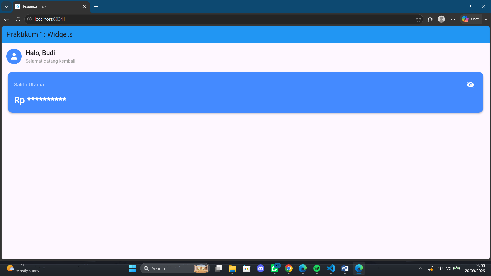
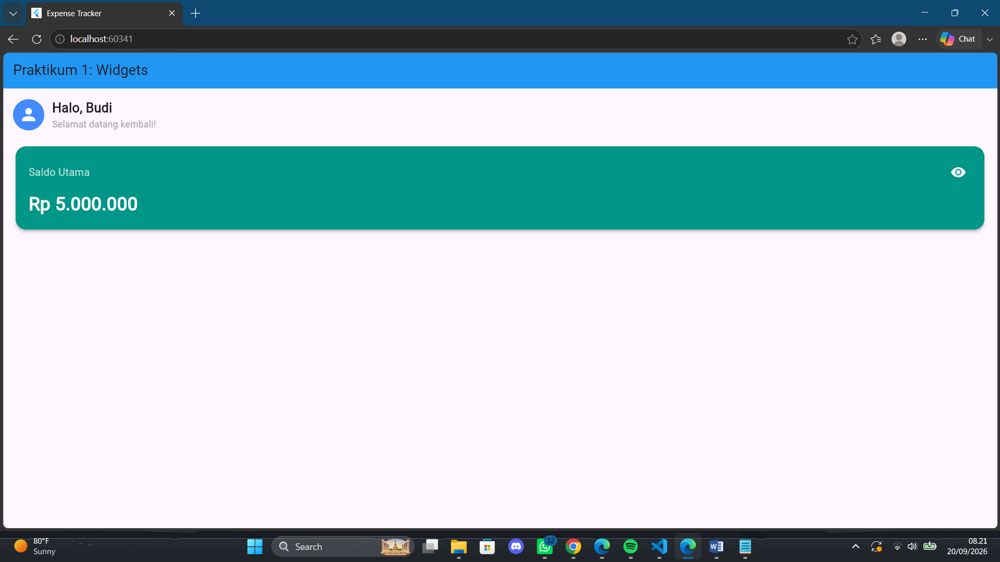
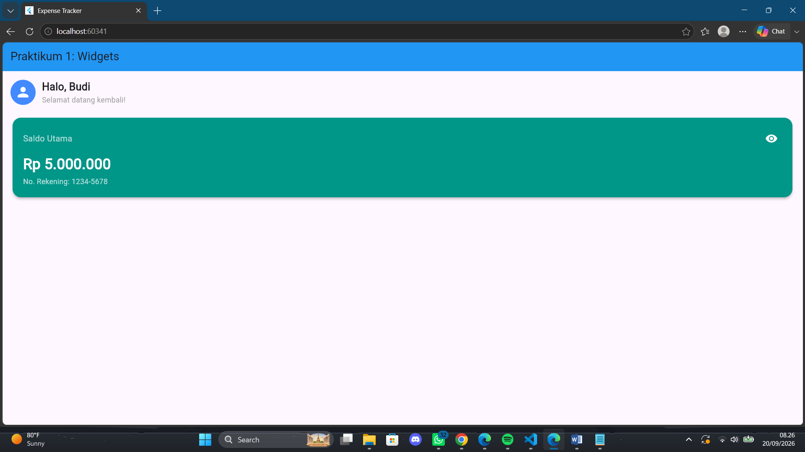
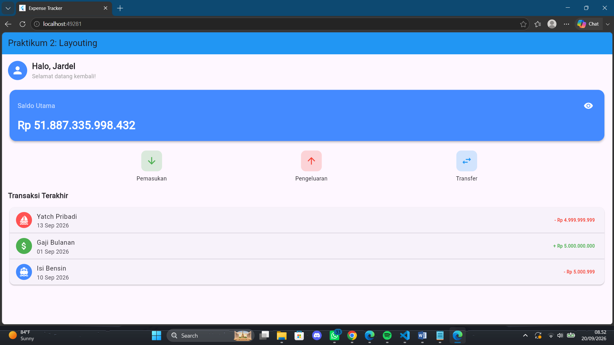
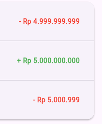
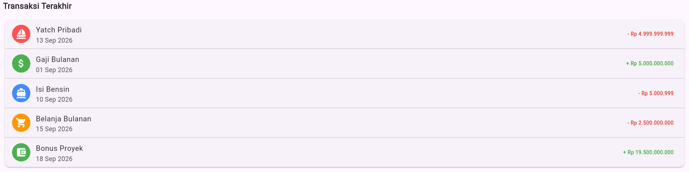

Laporan Praktikum 2
Mata Kuliah: Aplikasi Mobile (Flutter)
A. Pendahuluan
Dalam pengembangan aplikasi mobile menggunakan framework Flutter, formulir merupakan elemen krusial untuk berinteraksi dan mengelola input pengguna secara efektif. Praktikum ini berfokus pada implementasi Basic Form yang berfungsi sebagai antarmuka penerimaan nilai melalui berbagai widget, khususnya TextField dan TextFormField. Penguasaan terhadap TextField yang berguna untuk masukan teks dasar, serta TextFormField yang merupakan versi lengkap dengan integrasi otomatis terhadap logika validasi dan manajemen state, menjadi tujuan utama dari modul ini. Melalui pengerjaan berbagai skenario form mulai dari mengelola inputan sederhana, menerapkan aturan validasi email, hingga menyusun formulir registrasi yang modular kemampuan mengontrol data menggunakan TextEditingController dan GlobalKey<FormState> dapat diimplementasikan untuk membangun aplikasi yang responsif dan meminimalisir kesalahan input dari pengguna.
B. Tujuan
- Mahasiswa mampu membuat basic form untuk menerima inputan dari keyboard dan mengelola inputan.
- Membuat beberapa input widgets.
- Membuat dan mengontrol inputan dari user.
C. Modul 1
1. main.dart & Scaffold
void main() {
runApp(const MyApp());
}
class MyApp extends StatelessWidget {
const MyApp({super.key});
@override
Widget build(BuildContext context) {
return MaterialApp(
debugShowCheckedModeBanner: false,
title: 'Expense Tracker',
theme: ThemeData(
primarySwatch: Colors.blue,
),
home: const DashboardScreen(),
);
}
}- a. MaterialApp: Bertindak sebagai root atau fondasi utama aplikasi yang menerapkan gaya Material Design.
- b. Scaffold: Menyediakan struktur tata letak dasar, seperti AppBar untuk bagian atas layar, dan properti body untuk menampung isi konten utama aplikasi.
2. Stateless Widget
Stateless Widget digunakan untuk komponen UI yang bersifat statis dan tidak pernah berubah setelah dirender di layar.
Widget build(BuildContext context) {
return Row(
children: [
CircleAvatar(
radius: 30,
backgroundColor: Colors.blueAccent,
child: Icon(Icons.person, size: 30, color: Colors.white),
),
SizedBox(width: 15),
Column(
crossAxisAlignment: CrossAxisAlignment.start,
children: [
Text(
'Halo, Budi',
style: TextStyle(
fontSize: 20,
fontWeight: FontWeight.bold,
),
),
Text(
'Selamat datang kembali!',
style: TextStyle(
fontSize: 14,
color: Colors.grey,
),
),
],
),
],
);
}Row digunakan untuk menyusun Avatar dan Sapaan secara menyamping kiri ke kanan, sedangkan Column digunakan untuk menumpuk teks sapaan dari atas ke bawah.
3. Stateful Widget & setState
class BalanceCardWidgetState extends State<BalanceCardWidget> {
bool _isBalanceVisible = true;
void _toggleVisibility() {
setState(() {
_isBalanceVisible = !_isBalanceVisible;
});
}
}- a. Variabel _isBalanceVisible: Menyimpan state aktif berupa nilai boolean untuk melacak status sensor teks.
- b. Fungsi setState(): Ini adalah metode krusial dalam Stateful Widget. Saat dipanggil, fungsi ini akan memperbarui nilai variabel dan memberi tahu Flutter untuk merender ulang UI agar sesuai dengan data terbaru.
Penerapan state tersebut pada UI menggunakan logika:
IconButton(
icon: Icon(
_isBalanceVisible ? Icons.visibility : Icons.visibility_off,
color: Colors.white,
),
onPressed: _toggleVisibility,
)Jika _isBalanceVisible bernilai true, maka tampilkan Icons.visibility. Jika false, tampilkan Icons.visibility_off. Logika yang sama juga diterapkan pada teks nominal saldo.

Gambar 1: Output Modul 1
4. LATIHAN
1) Tugas 1: Styling → Ubah warna tema BalanceCard dari biru (Colors.blueAccent) menjadi hijau emerald (Colors.teal).

Gambar 2: Output Tugas 1 Styling
2) Tugas 2: Modifikasi UI → Tambahkan teks statis berupa "No. Rekening: 1234-5678" di bagian bawah nominal saldo di dalam kartu.
const SizedBox(
height: 4,
),
const Text(
'No. Rekening: 1234-5678',
style: TextStyle(fontSize: 14, color: Colors.white70),
),
Gambar 3: Output Tugas 2 Modifikasi UI
D. MODUL 2
1. Scrollable Dashboard
Pada Modul 2, layar aplikasi mulai dipenuhi dengan banyak komponen. Agar layar tidak mengalami terpotong atau error saat daftar transaksi semakin panjang, komponen utama dibungkus menggunakan SingleChildScrollView.
body: const SingleChildScrollView(
child: Padding(
padding: EdgeInsets.all(16.0),
child: Column(
// ...
),
),
),SingleChildScrollView memungkinkan pengguna untuk menggulir layar secara vertikal jika konten melebihi batas tinggi layar perangkat.
2. Row & Container
Untuk deretan tombol "Pemasukan", "Pengeluaran", dan "Transfer", widget Row digunakan agar komponen berjejer ke samping.
return Row(
mainAxisAlignment: MainAxisAlignment.spaceEvenly,
children: [
_buildActionButton(Icons.arrow_downward, 'Pemasukan', Colors.green),
_buildActionButton(Icons.arrow_upward, 'Pengeluaran', Colors.red),
_buildActionButton(Icons.swap_horiz, 'Transfer', Colors.blue),
],
);MainAxisAlignment.spaceEvenly membagi sisa ruang kosong secara merata di antara elemen-elemen tombol, sehingga posisinya rapi dan seimbang di layar.
Pada fungsi _buildActionButton, ikon dibungkus dengan Container agar bisa dimodifikasi latar belakangnya.
Container(
padding: const EdgeInsets.all(12),
decoration: BoxDecoration(
color: color.withOpacity(0.2),
borderRadius: BorderRadius.circular(12),
),
child: Icon(icon, color: color, size: 28),
),
const SizedBox(height: 8),Berfungsi sebagai kotak multifungsi yang bisa diberikan padding, warna background, serta bingkai melengkung melalui properti decoration.
3. Daftar Tersusun Otomatis
Untuk riwayat transaksi, alih-alih merakit Row dan Column secara manual berulang kali, modul ini menggunakan ListTile.
ListTile(
leading: const CircleAvatar(
backgroundColor: Colors.redAccent,
child: Icon(Icons.sailing, color: Colors.white),
),
title: const Text('Yatch Pribadi'),
subtitle: const Text('13 Sep 2026'),
trailing: const Text(
'-Rp 4.999.999.999',
style: TextStyle(color: Colors.red, fontWeight: FontWeight.bold),
),
)Widget bawaan Flutter untuk membuat baris daftar yang rapi secara instan. Terdiri dari komponen paling kiri atau ikon, title, subtitle, dan komponen paling kanan, seperti nominal uang.

Gambar 4: Output Modul 2 Scrollable Dashboard & ListTile
4. LATIHAN
1) Tugas 1: Styling → Pada widget Daftar Transaksi (ListTile), ubah warna trailing text pengeluaran menjadi merah dan text pemasukan menjadi hijau.
Sudah ada di modul tidak perlu di ubah

Gambar 5: Output Modul 2 Tugas 1
2) Tugas 2: Tambah Data → Tambahkan 2 transaksi fiktif baru ke dalam daftar "Transaksi Terakhir" di bawah kode yang sudah ada.
const Divider(height: 1),
ListTile(
leading: const CircleAvatar(
backgroundColor: Colors.orange,
child: Icon(Icons.shopping_cart, color: Colors.white),
),
title: const Text('Belanja Bulanan'),
subtitle: const Text('15 Sep 2026'),
trailing: const Text(
'- Rp 2.500.000.000',
style: TextStyle(
color: Colors.red,
fontWeight: FontWeight.bold,
),
),
),
const Divider(height: 1),
ListTile(
leading: const CircleAvatar(
backgroundColor: Colors.green,
child: Icon(
Icons.account_balance_wallet,
color: Colors.white,
),
),
title: const Text('Bonus Proyek'),
subtitle: const Text('18 Sep 2026'),
trailing: const Text(
'+ Rp 10.000.000.000',
style: TextStyle(
color: Colors.green,
fontWeight: FontWeight.bold,
),
),
),
Gambar 6: Output Modul 2 Tugas 2
Detail Praktikum
- MaterialApp & Scaffold Structure
- Stateless & Stateful Widget
- State Management (setState)
- Scrollable Layout (SingleChildScrollView)
- Row, Column & Container Styling
- ListTile & ListView Components